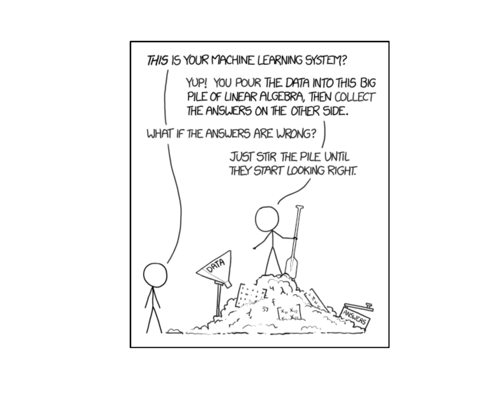
Lesson 31: Simple Linear Regression III
Calendar
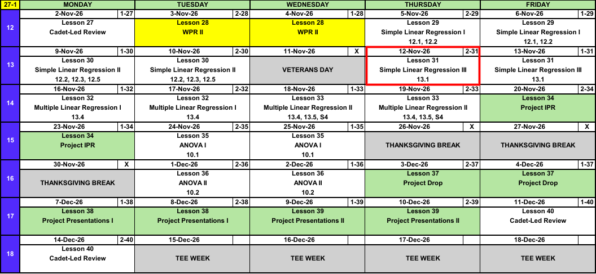
Admin
- Project partners: Select your project partner
- Partner status (as of 11 Nov): 8 cadets still need to pick their partner (B2: 0, C2: 8, D2: 0)
- Project IPR: Lesson 34 (20, 23 Nov). Come in as finished as possible.
What We Did: Lessons 29 and 30
NoteKey Concepts from Lesson 29
- Least squares: choose \(\hat{\beta}_0\), \(\hat{\beta}_1\) to minimize \(\sum (y_i - \hat{y}_i)^2\)
- \(\hat{\beta}_1 = \dfrac{\sum (x_i - \bar{x})(y_i - \bar{y})}{\sum (x_i - \bar{x})^2}\), \(\hat{\beta}_0 = \bar{y} - \hat{\beta}_1\bar{x}\)
- Slope: change in the mean of \(y\) for a one unit increase in \(x\)
- Predict only inside the range of the \(x\) data
NoteKey Concepts from Lesson 30
- Slope test: \(H_0: \beta_1 = 0\), \(t = \hat{\beta}_1 / s_{\hat{\beta}_1}\), df \(= n - 2\)
- \(r^2 = 1 - \text{SSE}/\text{SST}\): proportion of variation in \(y\) explained by the line
- R:
lm(y ~ x),summary(),predict()
What We’re Doing: Lesson 31
Objectives
- Produce residual plots and a normal-probability plot for a fitted regression model. (SLO 2, 4)
- Assess the assumptions of linear regression and judge model adequacy. (SLO 4, 6)
Required Reading
Devore 13.1
Break!
The Takeaway for Today
NoteKey Concepts from Lesson 31
- Model: \(Y = \beta_0 + \beta_1 x + \varepsilon\), \(\varepsilon \sim N(0, \sigma^2)\), independent
- LINE: Linear, Independent, Normal, Equal variance
- Residual plot (residuals vs fitted): no pattern checks L, constant spread checks E
- Histogram of residuals: checks N
- Independence: comes from how the data were collected
Our Model: We Must Validate the Assumptions
Same question as Lesson 30, now with 100 cadets. Download the data
ruck <- read.csv("ruck-100.csv")
model <- lm(time ~ weight, data = ruck)summary(model)
Call:
lm(formula = time ~ weight, data = ruck)
Residuals:
Min 1Q Median 3Q Max
-12.8414 -3.7023 0.1586 3.8041 14.6021
Coefficients:
Estimate Std. Error t value Pr(>|t|)
(Intercept) 129.1315 2.2660 56.98 <2e-16 ***
weight 1.2026 0.0528 22.78 <2e-16 ***
---
Signif. codes: 0 '***' 0.001 '**' 0.01 '*' 0.05 '.' 0.1 ' ' 1
Residual standard error: 5.454 on 98 degrees of freedom
Multiple R-squared: 0.8411, Adjusted R-squared: 0.8395
F-statistic: 518.8 on 1 and 98 DF, p-value: < 2.2e-16\[\widehat{\text{time}} = 129.13 + 1.20\,(\text{weight})\]
The slope test and \(r^2\) say this is a good model. Can we trust them?
Four Assumptions
Everything we did in Lesson 30 (the \(t\) test, the P-value, predictions) relies on four assumptions.
ImportantLINE
- Linear
- Independent
- Normal
- Equal variance
We don’t get to assume them. We have to validate them.
The Model, With Its Errors
ImportantSimple Linear Regression Model
\[Y = \beta_0 + \beta_1 x + \varepsilon, \qquad \varepsilon \sim N(0, \sigma^2)\]
- \(Y\): the response (ruck time). \(x\): the explanatory variable (pack weight).
- \(\beta_0 + \beta_1 x\): the true regression line, the mean of \(Y\) at a given \(x\)
- \(\varepsilon\): the random error, how far one cadet lands from the line
- \(N(0, \sigma^2)\): errors are normal, centered at 0, with the same variance \(\sigma^2\) at every \(x\)
- We estimate \(\varepsilon_i\) with the residual \(e_i = y_i - \hat{y}_i\) and \(\sigma\) with \(s = \sqrt{\text{SSE}/(n-2)}\)
What Each Letter Means
| Assumption | In the model | Check it with | |
|---|---|---|---|
| L | The mean of \(Y\) is a straight line in \(x\) | \(\beta_0 + \beta_1 x\) | Residual plot: no pattern |
| I | The errors are independent of each other | \(\varepsilon_1, \dots, \varepsilon_n\) independent | How the data were collected |
| N | The errors are normally distributed | \(\varepsilon \sim N\) | Histogram of residuals |
| E | The errors have the same variance at every \(x\) | \(\sigma^2\), not \(\sigma^2_x\) | Residual plot: constant spread |
L is about the line. I, N, E are all about \(\varepsilon\). Let’s take them one at a time.
L: Linearity
Is a straight line the right shape?
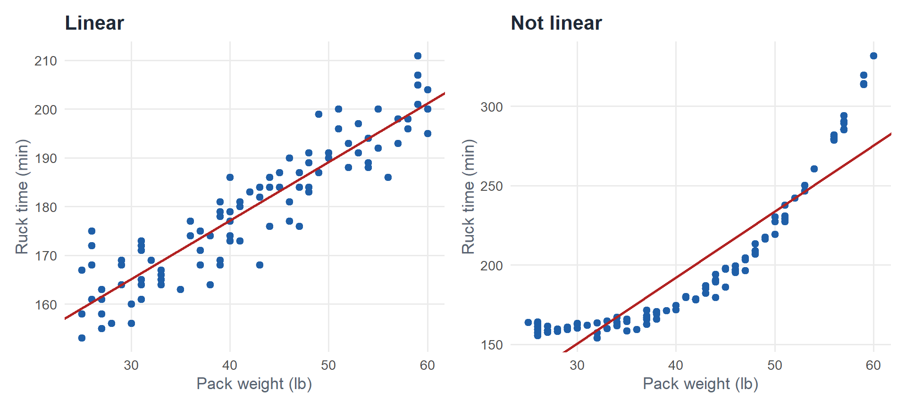
Easy to see here. Harder when the curve is subtle:
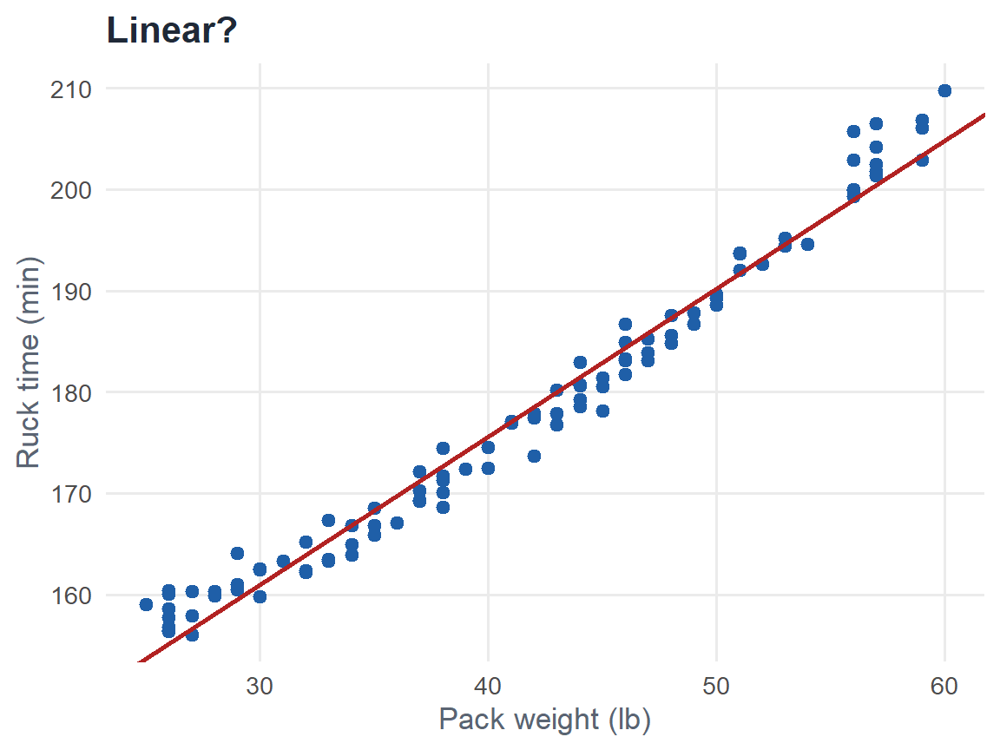
The trend tilts the picture. Take the line out.
Remember the grey lines from Lesson 29? Each one is a residual:
\[e_i = y_i - \hat{y}_i \qquad \text{(observed minus predicted)}\]
Residual plot: the scatterplot with the line subtracted off. Plot \(e_i\) against \(\hat{y}_i\). The line becomes \(e = 0\). In R, plot(model, which = 1) also draws a red trend line through the residuals: flat means no pattern.
Standardized residual: \(z_i = e_i / s\). Same picture, now in standard deviations. Most should fall between \(-2\) and \(2\).
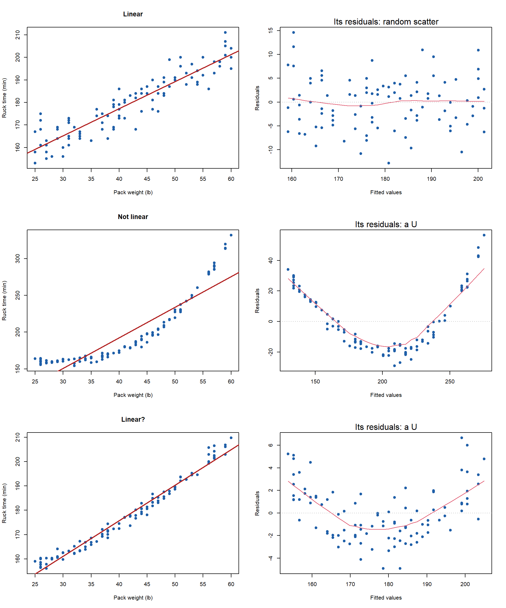
Both curves are obvious now, even the subtle one. A pattern in the residual plot means L fails.
Ruck Data
plot(model, which = 1)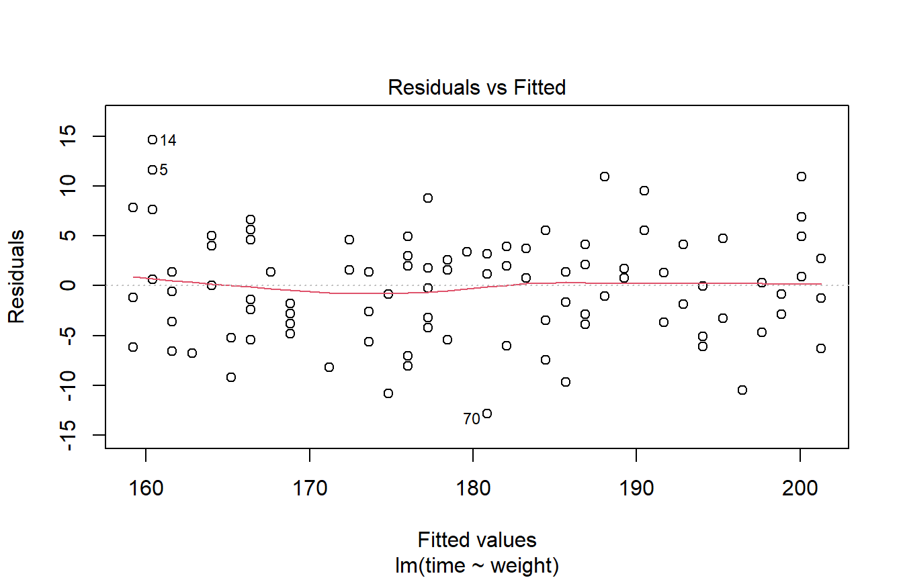
Random scatter above and below 0. The red line stays flat. L ✓
I: Independence
Not judged on a plot. We’ll come back to this.
N: Normality
Are the errors normal: most points close to the line, fewer far away, the same above and below?
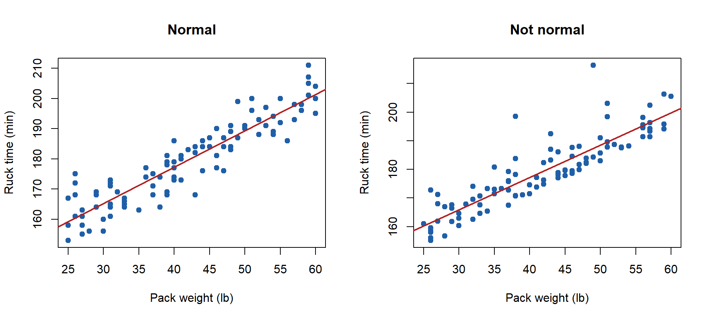
Hard to judge from a scatterplot. Stack the residuals.
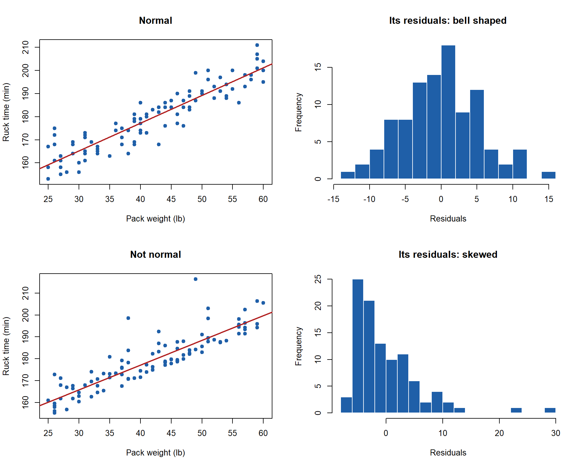
A skewed histogram of residuals means N fails.
Ruck Data
hist(model$residuals)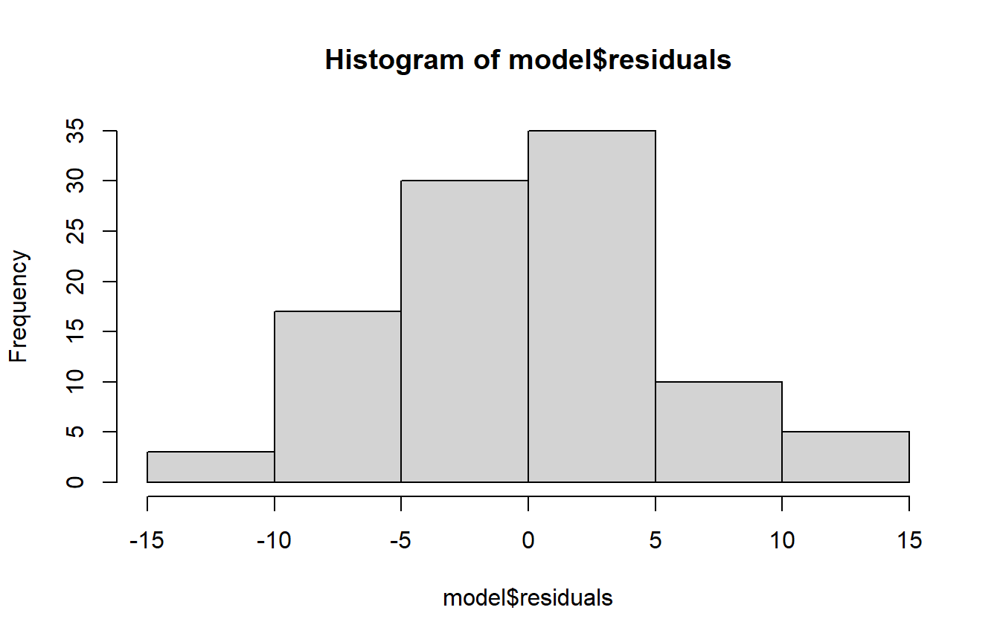
Roughly bell shaped, centered at 0. N ✓
E: Equal Variance
Is the spread around the line the same at every \(x\)?
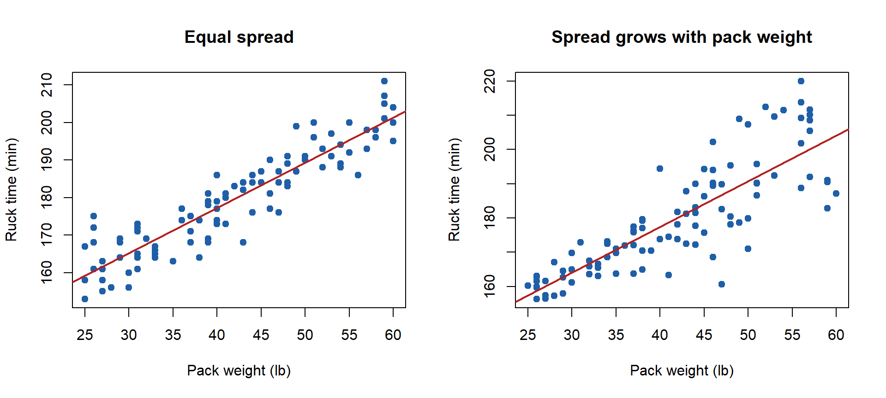
Check the residual plot.
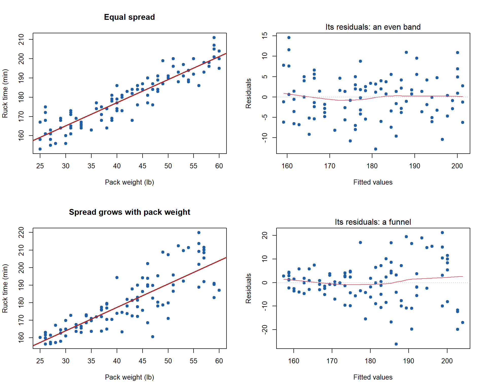
A funnel in the residual plot means E fails.
Ruck Data
plot(model, which = 1)
Spread about the same from left to right. No funnel. E ✓
Back to I: Independence
- No plot settles it. Ask how the data were collected.
- Does one observation affect another?
- Red flags: the same cadet measured repeatedly, data collected over time, cadets from the same squad rucking together
Ruck Data
100 different cadets, each rucked once. One cadet’s time doesn’t affect another’s. I ✓
TipRuck Model: Adequate
All four assumptions are reasonable. We can trust the slope test and \(r^2\) from Lesson 30.
WarningIf an Assumption Fails
The P-values and predictions from the model can’t be trusted.
Let’s Go to Vantage!
library(tidyverse)
library(foundry)
# Read the full AY27-1 readiness dataset from Foundry
master <- datasets.read_table("ay27_1_master")
# Keep one brigade and the columns we need; drop rows missing height or weight
MY_BRIGADE <- "20TH ENGINEER BRIGADE"
bde <- master |>
filter(BrigadeName == MY_BRIGADE) |>
select(height, weight, sex) |>
filter(!is.na(height), !is.na(weight))
# ---- Regression: weight on height ----
mod <- lm(weight ~ height, data = bde)
summary(mod)
# L and E: residual plot (no curve, no funnel, red line flat)
plot(mod, which = 1)
# N: histogram of residuals (roughly bell shaped)
hist(mod$residuals)
# ---- t tests: pull out each group's heights as a vector ----
males <- bde |>
filter(sex == "Male") |>
pull(height)
females <- bde |>
filter(sex == "Female") |>
pull(height)
# One-sample t: are male soldiers shorter than 72 inches on average?
# H0: mu = 72 Ha: mu < 72
t.test(x = males, mu = 72, alternative = "less")
# Two-sample t: do male and female soldiers differ in mean height?
# H0: mu_M - mu_F = 0 Ha: mu_M - mu_F != 0
# R's default is the two-sample t with approximate df (no equal variance assumption)
t.test(x = males, y = females, alternative = "two.sided")- Regression: Is there a curve? A funnel? Are the residuals approximately normal? Are the soldiers independent of each other?
- One-sample: Which number is the test statistic? The P-value? Are male soldiers shorter than 72 inches on average?
- Two-sample: Do male and female soldiers differ in mean height?
- Do the same for your project.
Board Problems
Problem 1: Range Day
Cadets fire at a qualification range. A regression of qualification score on hours of range time gives this residual plot.
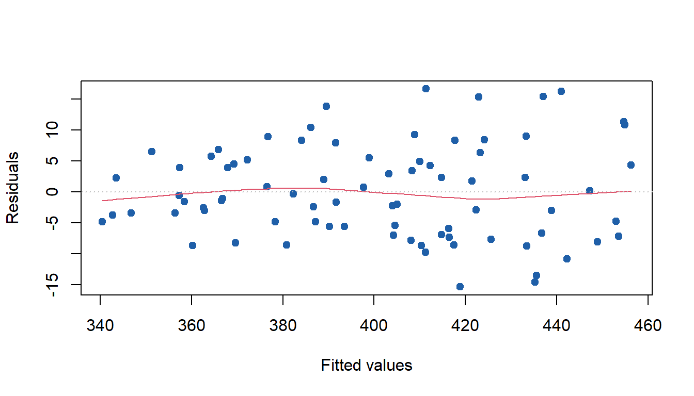
NoteQuestions
- Which assumption does this plot check?
- Is the model adequate? Why or why not?
TipAnswers
L and E. A residual plot checks for a pattern (L) and for constant spread (E).
No. The spread grows from left to right (a funnel). E fails.
Problem 2: Weekly Mileage
A regression of 2 mile run improvement on weekly running miles gives this residual plot.
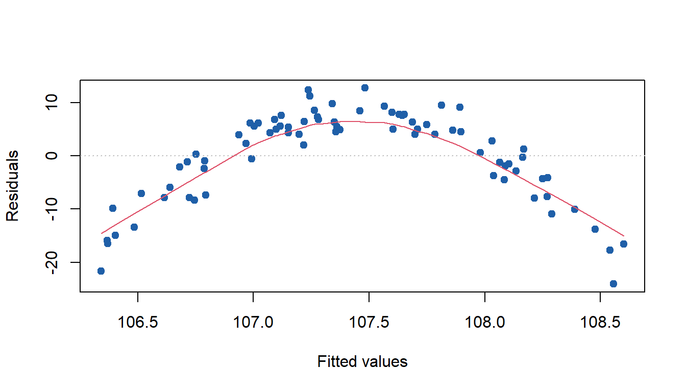
NoteQuestions
- Which assumption fails?
- What does that say about the straight line model?
TipAnswers
L. The residuals curve: below 0 at both ends, above 0 in the middle.
A straight line is the wrong shape. Improvement levels off at high mileage.
Problem 3: Company Ruck
A company commander records ruck times for every cadet in one company on the same morning, rucking together in squads. A regression of time on pack weight gives this residual plot.
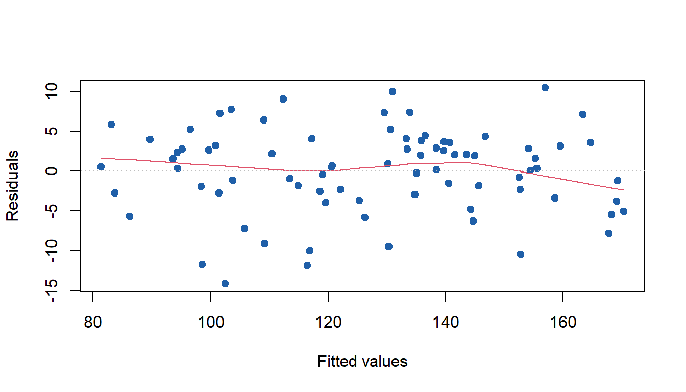
NoteQuestions
- Do L and E look reasonable?
- Which assumption is still in question? Why?
TipAnswers
Yes. Random scatter, no curve, constant spread.
I. Cadets in the same squad ruck together, so their times are likely related. The plot can’t show that.
Before You Leave
Today
- \(Y = \beta_0 + \beta_1 x + \varepsilon\), \(\varepsilon \sim N(0, \sigma^2)\)
- LINE: Linear, Independent, Normal, Equal variance
- Residual plot for L and E; histogram for N; data collection for I
- Check them before you trust a P-value
Any questions?
Next Lesson
Lesson 32: Multiple Linear Regression I
- 16, 17 Nov
- Devore 13.4
- More than one explanatory variable
- Project: starter code for a Quarto presentation or Markdown report
Upcoming Graded Events
- Project IPR: Lesson 34 (20, 23 Nov)
- TEE: 15 to 18 Dec 2026